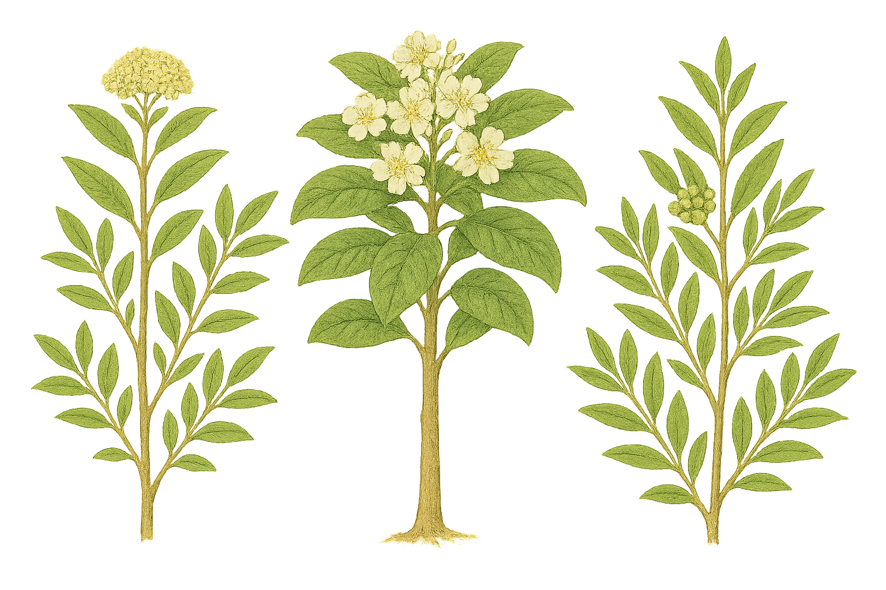

Paracryphiaceae
(No common name widely used)
Paracryphiaceae is a small family of flowering plants comprising 3 genera (Paracryphia, Quintinia, Sphenostemon) and about 36 species of evergreen trees and shrubs. The family has a restricted distribution in the Southwest Pacific region, including eastern Australia, New Guinea, New Caledonia, New Zealand, the Philippines, and Vanuatu. It occupies a unique phylogenetic position, placed in its own order, Paracryphiales, within the campanulid clade of asterids.
Overview
Paracryphiaceae represents an intriguing lineage of woody plants endemic to the Australasian and Malesian regions. The modern circumscription of the family unites three genera that were previously placed in separate families (Paracryphiaceae s.s., Quintiniaceae, and Sphenostemonaceae). Molecular data revealed their close relationship, leading to their consolidation into a single family, which is distinct enough to warrant its own order, Paracryphiales.
The family exhibits considerable morphological diversity due to the merger of these distinct groups. Members range from shrubs to large trees found in rainforests and montane forests. They share features like simple leaves (though arrangement varies) and often small flowers arranged in racemes or panicles, but differ significantly in floral details like the presence/absence of perianth, stamen number, and ovary position. This internal variation makes family-level recognition based solely on morphology challenging without considering the specific genera.
Ecologically, they are components of wet forest ecosystems in their respective ranges. Some species, particularly in Quintinia, are known to accumulate aluminum. The family has little direct economic importance but is significant for understanding asterid phylogeny and the biogeography of the Southwest Pacific flora.
Quick Facts
- Scientific Name: Paracryphiaceae Airy Shaw
- Common Name: None widely used
- Number of Genera: 3 (Paracryphia, Quintinia, Sphenostemon)
- Number of Species: Approximately 36
- Distribution: SW Pacific: E Australia, New Guinea, New Caledonia, New Zealand, Philippines, Vanuatu.
- Evolutionary Group: Eudicots - Asterids - Campanulids - Paracryphiales
Key Characteristics
Characteristics vary significantly among the three genera:
Growth Form and Habit
Evergreen trees or shrubs.
Leaves
Leaves are simple, often leathery (coriaceous). Arrangement varies: whorled or subopposite in Paracryphia, alternate (spiral) in Quintinia, usually opposite or subopposite in Sphenostemon. Margins are entire or toothed (serrate/dentate). Stipules are usually described as absent, but may be small and interpetiolar in Paracryphia.
Inflorescence
Flowers are arranged in terminal or axillary racemes, panicles, or dense clusters (fascicles).
Flowers
Flowers are generally small, actinomorphic, and can be bisexual or unisexual (plants then dioecious or polygamous). Floral structure is highly variable across genera:
- Perianth:
- Paracryphia: Perianth absent (flowers naked).
- Quintinia: Differentiated into calyx and corolla. Calyx with 4-5 small lobes; Corolla with 4-5 free petals.
- Sphenostemon: Sepals 4, often persistent; Petals usually absent, or sometimes 4 and small/caducous.
- Androecium:
- Paracryphia: Stamens numerous (8 to many), filaments slender.
- Quintinia: Stamens 4-5, alternating with the petals.
- Sphenostemon: Stamens 2-12, often with thick, fleshy filaments; anthers sometimes sessile.
- Gynoecium:
- Paracryphia: Ovary superior, 4-15 fused carpels, usually unilocular with intrusive parietal placentation (appearing multilocular).
- Quintinia: Ovary inferior or half-inferior, 3-5 fused carpels, 3-5 locules with axile placentation.
- Sphenostemon: Ovary superior, 2 fused carpels, 2 locules with apical-axile placentation.
Fruits and Seeds
Fruit type varies: a septicidal or loculicidal capsule in Paracryphia and Quintinia; often a fleshy berry or drupe-like fruit in Sphenostemon. Seeds are usually small, sometimes winged (Quintinia). Endosperm is present.
Chemical Characteristics
Plants often accumulate aluminum. The presence of iridoids is suspected but requires further confirmation across all genera.
Field Identification
Identifying Paracryphiaceae in the field is challenging due to the morphological diversity among its three genera and its restricted geographic range. Identification typically requires focusing on genus-level characteristics within the SW Pacific region:
Primary Identification Features (Requires Genus-Level Focus)
- Geographic Location: Restricted to SW Pacific (E Australia, New Guinea, New Caledonia, NZ, Philippines, Vanuatu).
- Habit: Evergreen trees or shrubs.
- Leaves: Simple, leathery; arrangement key for genus (whorled/subopposite - Paracryphia; alternate - Quintinia; opposite - Sphenostemon).
- Flowers (Key Differences):
- Naked flowers, numerous stamens, superior ovary -> Paracryphia (New Caledonia)
- Flowers with 4-5 petals, 4-5 stamens, inferior/half-inferior ovary -> Quintinia (Aus, NG, NZ, NC, Phil, Van)
- Flowers usually apetalous (4 sepals), 2-12 stamens (often thick filaments), superior ovary -> Sphenostemon (Aus, NG, NC)
- Fruit: Capsule (Paracryphia, Quintinia) or Berry/Drupe (Sphenostemon).
Secondary Identification Features
- Leaf Margins: Entire or toothed.
- Inflorescence Type: Racemes, panicles, or clusters.
- Habitat: Typically rainforests or montane wet forests.
Seasonal Identification Tips
- Flowering/Fruiting Period: Essential for genus identification due to floral differences. Timing varies greatly by species and location within the SW Pacific.
- Vegetative State: Leaf arrangement (whorled, alternate, opposite) combined with geographic location provides the strongest clues for potential genus identification.
Common Confusion Points
Given the variability and overlap with other families in the region:
- Quintinia might be confused with Escalloniaceae or some Cunoniaceae based on leaves and capsular fruit, but flower details (inferior ovary, 5 stamens) differ.
- Sphenostemon might be confused with some members of families like Trimeniaceae or Monimiaceae if only vegetative or fruiting material is available. Floral details (apetalous, stamen structure) are critical.
- Paracryphia is highly distinctive with its naked flowers and numerous stamens but is restricted to New Caledonia.
- Requires use of regional floras and keys for accurate identification.
Field Guide Quick Reference (SW Pacific)
Look For (Genus Dependent):
- Tree/Shrub in SW Pacific
- Leaves: Simple, leathery
- Paracryphia: Lvs whorled; Fls naked, stamens numerous.
- Quintinia: Lvs alternate; Fls 4-5 petals, 4-5 stamens, ovary inferior.
- Sphenostemon: Lvs opposite; Fls apetalous, stamens 2-12, ovary superior.
- Fruit: Capsule or Berry/Drupe.
Key Distinctions:
- Unique combination of features for each genus.
- Restricted geographic distribution.
- Placement in isolated order Paracryphiales.
- Often aluminum accumulators.
Notable Examples (The Three Genera)
The family comprises three morphologically distinct genera:

Paracryphia
(e.g., P. alticola)
This genus contains only one species, Paracryphia alticola, a tree endemic to the montane rainforests of New Caledonia. It is characterized by its whorled or subopposite leaves and unique flowers that lack any perianth (sepals or petals) but possess numerous stamens surrounding a superior ovary.

Quintinia
(Tawheowheo - NZ; e.g., Q. serrata - Aus)
The largest genus (~25 species), found from the Philippines and New Guinea to Australia, New Zealand, and New Caledonia. They are trees or shrubs with alternate leaves. Flowers have both sepals and 4-5 petals, 4-5 stamens, and an inferior or semi-inferior ovary developing into a capsule. Q. serrata (Australia) and Q. acutifolia (Tawheowheo, NZ) are examples.

Sphenostemon
(e.g., S. papuanus)
This genus includes about 10 species of trees and shrubs found in New Guinea, northeastern Australia, and New Caledonia. They typically have opposite leaves. Flowers usually lack petals (apetalous) but have 4 sepals, 2-12 stamens often with thick filaments, and a superior ovary that develops into a berry or drupe-like fruit.
Phylogeny and Classification
Paracryphiaceae holds a unique and somewhat isolated position within the asterid clade, specifically within the campanulids. Molecular data led to the recognition of its distinctiveness by placing it in its own order, Paracryphiales. This order currently contains only the single family Paracryphiaceae (circumscribed to include the former Quintiniaceae and Sphenostemonaceae alongside Paracryphia).
Paracryphiales is positioned as the sister group to a large clade containing the orders Dipsacales (e.g., Adoxaceae, Caprifoliaceae) and Apiales (e.g., Apiaceae, Araliaceae). This relationship highlights Paracryphiaceae as an early diverging lineage within the core campanulids, separate from the large Asterales order (sunflower family).
Position in Plant Phylogeny (APG IV)
- Kingdom: Plantae
- Clade: Angiosperms (Flowering plants)
- Clade: Eudicots
- Clade: Asterids
- Clade: Campanulids
- Order: Paracryphiales
- Family: Paracryphiaceae
Evolutionary Significance
Paracryphiaceae is important for understanding asterid evolution:
- Basal Campanulid Lineage: Represents an early branch within the campanulid diversification, helping to resolve relationships among major orders like Apiales, Dipsacales, and Asterales.
- Morphological Diversity: The inclusion of three previously separate families highlights the potential for significant morphological divergence within a monophyletic group, particularly in floral structure.
- Biogeography: Its restricted SW Pacific distribution points to origins and diversification within the Australasian/Malesian region, contributing to understanding the assembly of flora in this biodiversity hotspot.
- Phylogenetic Discovery: The recognition of Paracryphiales based on molecular data underscores the power of these methods in revealing evolutionary relationships not obvious from morphology alone.